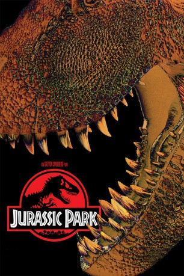

 
 IMDB-Wertung: 8.1 / 10
IMDB-Wertung: 8.1 / 10  IMDB-TOP-Platzierung: 180
IMDB-TOP-Platzierung: 180  Metascore:
Metascore: 
John Hammond, ein reicher Unternehmer, errichtet auf einer einsamen Insel heimlich einen Erlebnispark, der für seine Gäste außergewöhnliche Attraktionen bereithält. Es ist gelungen, aus einer urzeitlichen DNA leibhaftige Dinosaurier ins Leben zu rufen. Bevor der Park für das Publikum geöffnet wird, lädt er einen führenden Paläontologen, dessen Freundin, eine Paläobotanikerin, einen berühmten Mathematiker und seine beiden wißbegierigen Enkel ein, um die besorgten Investoren zu beruhigen. Aber der Besuch seiner ersten Gäste verläuft alles andere als nach Plan. Die urzeitlichen Monster brechen aus, entziehen sich jeder Kontrolle und starten eine mörderische Jagd auf ihre Schöpfer ...
Jahr: 1993
Dauer: 127 Minuten
FSK: 12
Land: USA Studio: Universal PicturesTonspuren: DTS - ,
Untertitel: Deutsch,
Auflösung: 1080p (1920x1040) Größe: 8796 MB
Genre: Thriller, Sci-Fi, Abenteuer
Regisseur:  Steven Spielberg
Steven Spielberg
Drehbuch: Michael Crichton, Michael Crichton, David Koepp
Soundtrack: John Williams
Darsteller:
 Sam Neill als Dr. Alan Grant
Sam Neill als Dr. Alan Grant Laura Dern als Dr. Ellie Sattler
Laura Dern als Dr. Ellie Sattler Jeff Goldblum als Dr. Ian Malcolm
Jeff Goldblum als Dr. Ian Malcolm Richard Attenborough als John Hammond
Richard Attenborough als John Hammond Joseph Mazzello als Tim Murphy
Joseph Mazzello als Tim Murphy Ariana Richards als Lex Murphy
Ariana Richards als Lex Murphy Samuel L. Jackson als Ray Arnold
Samuel L. Jackson als Ray Arnold BD Wong als Henry Wu
BD Wong als Henry Wu Wayne Knight als Dennis Nedry
Wayne Knight als Dennis Nedry Miguel Sandoval als Juanito Rostagno
Miguel Sandoval als Juanito Rostagno Christopher John Fields als Volunteer #1
Christopher John Fields als Volunteer #1 Whit Hertford als Volunteer Boy
Whit Hertford als Volunteer Boy Jophery C. Brown als Worker in Raptor Pen
Jophery C. Brown als Worker in Raptor Pen Gary Rodriguez als Miner - Dug Out Mosquito , uncredited
Gary Rodriguez als Miner - Dug Out Mosquito , uncreditedDatei: X:\5-Pentalogie(A-Z)\Jurassic Park\Jurassic Park 1 (1993, FSK12, 1920x1040) 3D.mkv seit 04.08.2015
Festplatte: HD Collection-3(N-Z)-6(A-Z)
 Es gibt insgesamt 11 Filme in der Gruppe '5-Pentalogie(A-Z)\Jurassic Park'
Es gibt insgesamt 11 Filme in der Gruppe '5-Pentalogie(A-Z)\Jurassic Park'